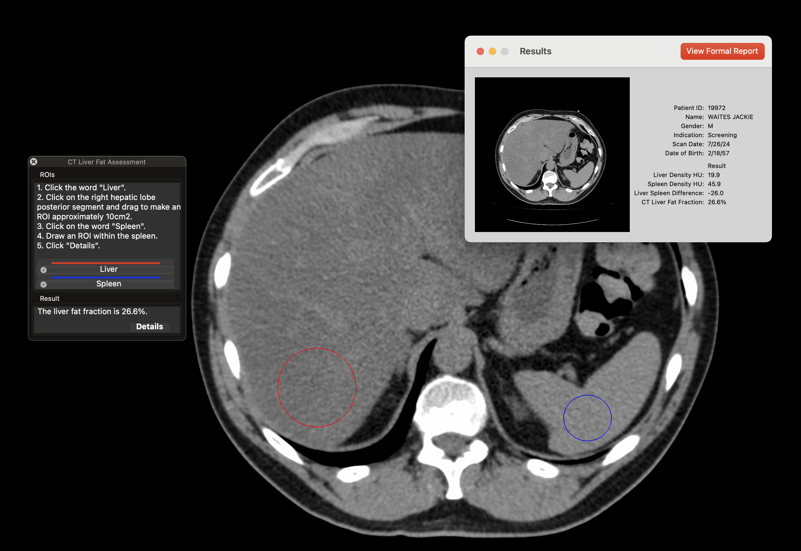

Description: This plugin provides a quantitative evaluation of the liver for fatty infiltration / hepatic steatosis, reporting a PDFF-equivalent fat fraction based on CT images. It is used for patients potentially having nonalcoholic fatty liver disease (NAFLD).
A full color PDF report is generated automatically using the patient’s demographics from the DICOM metadata, including a graphical steatosis scale.

Calculations are based on the standard linear equation (AJR Am J Roentgenol 2018;211(3):W151–W157) using the average hepatic density from CT images acquired at 120kVp. An internal check comparing liver to spleen is also applied to avoid errors relating to technique causing false positives.
Tips: When manually selecting the liver ROI, it is best to use the right hepatic lobe near the posterior segment, which has been shown to yield the most accurate results. The user must ensure that the CT images are of diagnostic quality, do not have excessive noise, and are taken at 120kVp. Standard scanner calibration protocols should be followed as required.
*NOTE: THIS SOFTWARE IS NOT INTENDED FOR PRIMARY DIAGNOSIS OR TREATMENT PLANNING. IT IS ONLY FOR SCIENTIFIC USAGE.
1. Click "Download and Install" below.
2. Find the plugin under Plugins-->Roi Tools-->Liver Fat Assessment
Compatibility: MacOS 11 and higher.
PRICE: Free. However, we are working to produce additional plugins and any donations would help.